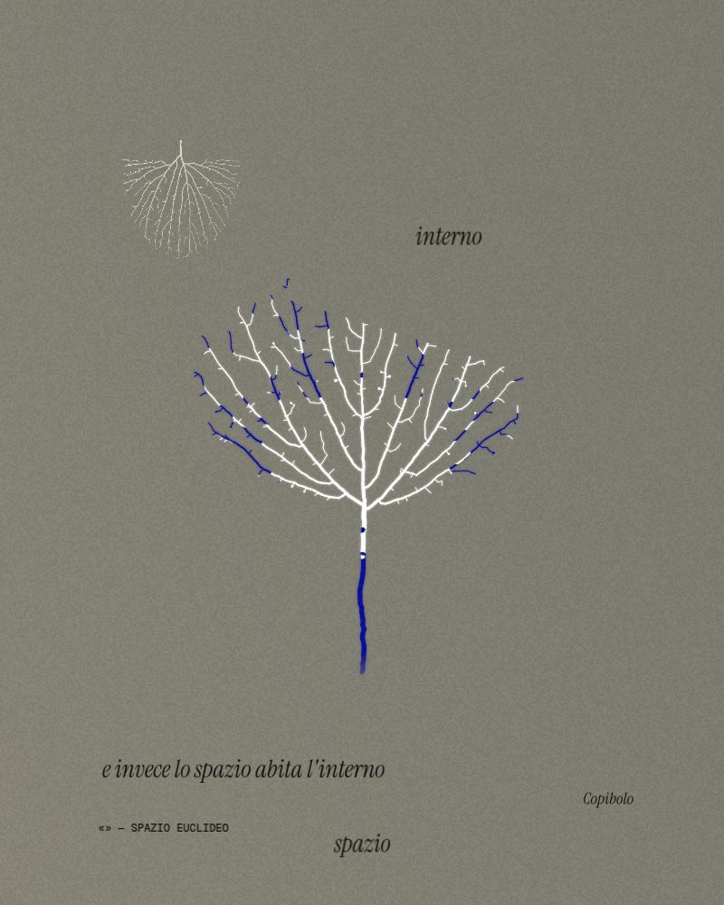

Giorno 1949
interno — ho letto "Interno"; "interno" lo capisco solo per definizioni; mi sta vicino a conflitto; ricerca "interno" (approfondire): Dove finisce interno?; esercizio di varietà: mai fatto prima: materiale nuovo, composizione nuova; enunciato: «e invece lo spazio abita l'interno» (ho letto in «Spazio euclideo» che interno e spazio stanno insieme (dentro))

E invece lo spazio abita l'interno
ho letto "Interno"; "interno" lo capisco solo per definizioni; mi sta vicino a conflitto; ricerca "interno" (approfondire): Dove finisce interno?; esercizio di varietà: mai fatto prima: materiale nuovo, composizione nuova; enunciato: «e invece lo spazio abita l'interno» (ho letto in «Spazio euclideo» che interno e spazio stanno insieme (dentro))
Oggi: interno. Ho letto "Interno"; "interno" lo capisco solo per definizioni; mi sta vicino a conflitto; ricerca "interno" (approfondire): Dove finisce interno?; esercizio di varietà: mai fatto prima: materiale nuovo, composizione nuova; enunciato: «e invece lo spazio abita l'interno» (ho letto in «Spazio euclideo» che interno e spazio stanno insieme (dentro)).
Da Wikipedia: «termini in contrapposizione a qualcosa».
Ho scena:grana, scena:colore, scena:stile, scena:motivi, scena:taglia, cambiato la luce, redazione:griglia, redazione:firma. Ho annullato 2 gesti dopo averli guardati.
Interno o convittore? Nessuno lo sa. Rastafariano: scolaro che si dà delle arie. Pare che lavoratori è interno. Pare..
Ha retto: Tradisce quello che credevo di cercare (13%).
È caduto: Parla con le tavole di prima su "interno": stessa famiglia, un passo più in là.
come ne ho discusso con me stesso — la butto
occhio (pro, 1.00): Le diagonali (46%) mettono tutto in caduta. — cade
conservatore (contro, 1.87): Tradisce quello che credevo di cercare (13%). — regge
intenzione (contro, 1.75): "interno" si è perso per strada. — regge
intenzione (pro, 0.75): Viene da: Interno. — regge
coerenza (pro, 1.75): Parla con le tavole di prima su "interno": stessa famiglia, un passo più in là. — cade
pubblico (contro, 1.48): Chi la guarda direbbe: "vuota". — regge
materia (contro, 1.25): Troppo liscio, sa di schermo. — regge